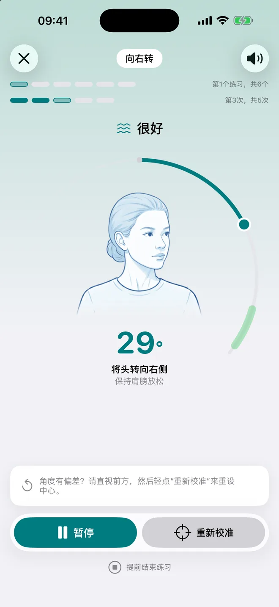
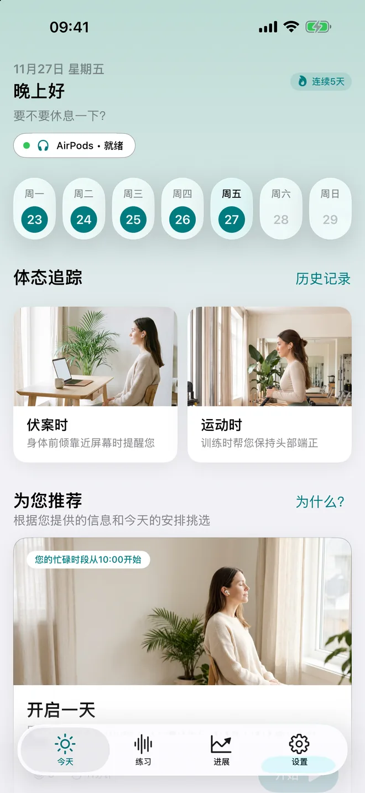
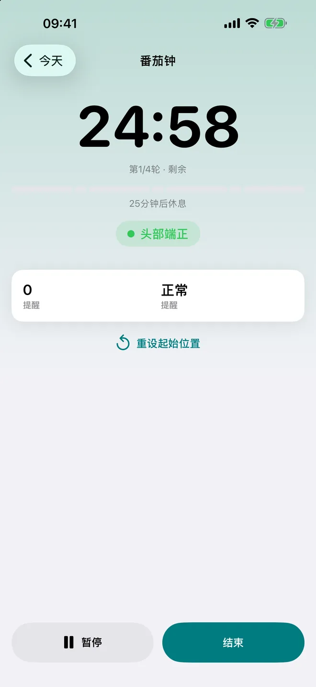

颈部
转头、侧倾、低头和抬头、收下巴。AirPods 测量角度并计算次数；不用 AirPods 时，Nodly 会按计时引导节奏。
针对颈部、呼吸、眼睛、双手和双腿的简短练习，以及桌前瑜伽。配合 AirPods，Nodly 可测量您的颈部动作、追踪您的体态，并在您低头过久时提醒您。
在 App Store 下载适用于 iPhone 和 iPad · 可搭配兼容的 AirPods，也可不用

不只是颈部
转头、侧倾、低头和抬头、收下巴。AirPods 测量角度并计算次数；不用 AirPods 时，Nodly 会按计时引导节奏。

长呼气、箱式呼吸和均衡呼吸，可选1、2或3分钟，由动画和轻微振动引导节奏。

离开屏幕两分钟：眺望远处，缓慢眨眼，再闭眼休息。

手腕拉伸、手腕绕环以及握拳与张开，适合整天使用键盘和鼠标的日子。

提踵、勾脚尖、伸膝和坐姿踏步，不必离开座椅。

坐姿猫牛式、侧弯和扭转，加上肩部动作，在会议间隙放松一下。
只有颈部追踪需要 AirPods，其他练习都无需 AirPods。
通过 AirPods 测量
耳机中的运动传感器会追踪您的头部角度。达到目标范围时，Nodly 会用提示音和轻微振动告诉您，并为您计数。目标会根据您自己的活动范围调整。
Nodly 使用耳机中的运动传感器。无需摄像头，也无需其他设备。
直视前方，保持不动几秒钟。Nodly 会将此姿势设为0°。
达到目标范围时，Nodly 会用提示音和轻微振动告诉您，并为您计数。
0°
右
向右拖动，直到进入绿色范围，然后回到中间。
次数: 0


体态追踪
工作时追踪您的头部，时长从30分钟到2小时，也可以按番茄钟进行：工作25分钟，休息5分钟。
站立练习时，头部一旦低垂，Nodly 几秒内就会提醒您。躺着练习时，只需将其暂停。
锁定手机后可继续工作。剩余时间会显示在锁定屏幕上，您可以在那里暂停或结束。
使用 Siri、从控制中心，或通过“快捷指令”中的专注模式自动化开始。
“在 Nodly 中开始体态追踪”
组合
从“开启一天”或“屏幕休息”等现成的组合开始，或从练习库中挑选动作，按自己的顺序排列。“今天”界面中的“为您推荐”会根据您的一天和最忙的时段推荐合适的组合。
进展
连续记录、本周情况，以及您在颈部、呼吸、眼睛、双手和双腿上花费的时间，一目了然。随着您坚持练习，一张小小的 3D 书桌也会渐渐变得整洁。
细节
您的练习记录和组合会通过您自己的 iCloud 在 iPhone 和 iPad 之间同步。
颈部练习可以按计时进行。其他练习始终不需要 AirPods。
每日提醒、忙碌时段的桌前休息提醒和每周回顾，均可自行选择。
语音提示、提示音和触感反馈为您引导，让您的视线可以离开屏幕。
支持动态字体、旁白和减弱动态效果，适用于 iPhone 和 iPad。
简体中文、繁体中文、英语、土耳其语、德语、西班牙语、法语、意大利语、葡萄牙语、荷兰语、俄语、日语和韩语。
隐私与信任
运动数据在您的手机上处理，原始动作数据绝不会被存储。无需账户。
动作应缓慢而舒适。如果感到不适，请立即停止。Nodly 绝不会勉强您。
Nodly 是一款健康生活 App，不对任何疾病进行诊断或治疗。如果您的颈部有不适问题，请在开始前咨询健康专业人士。